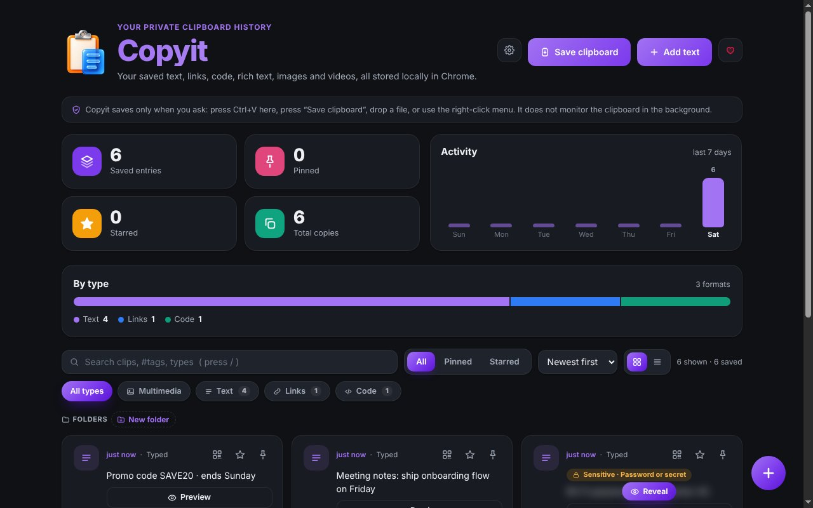
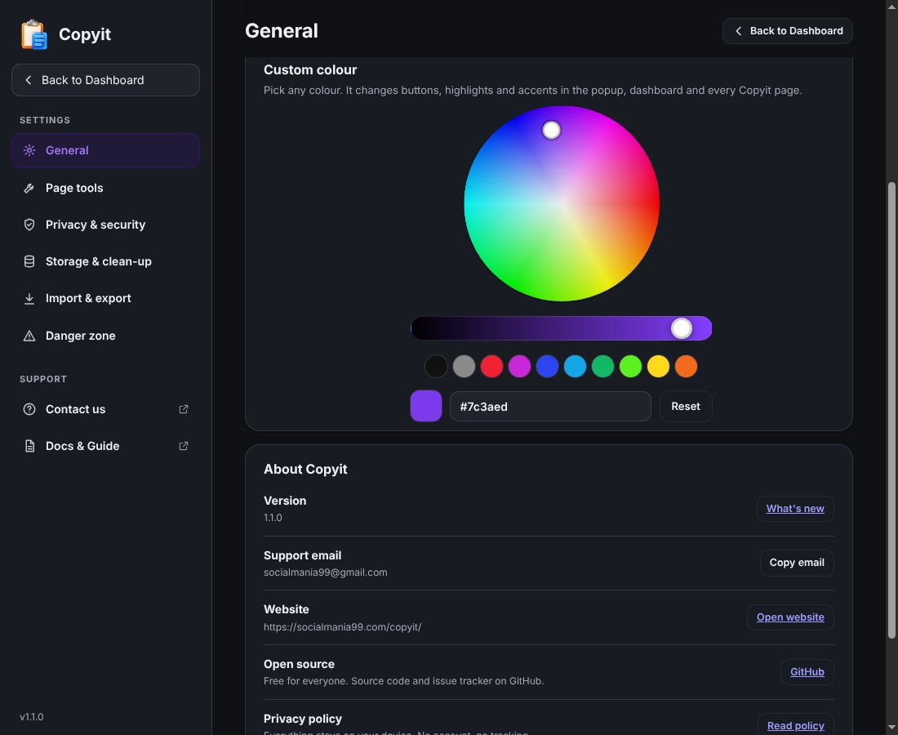
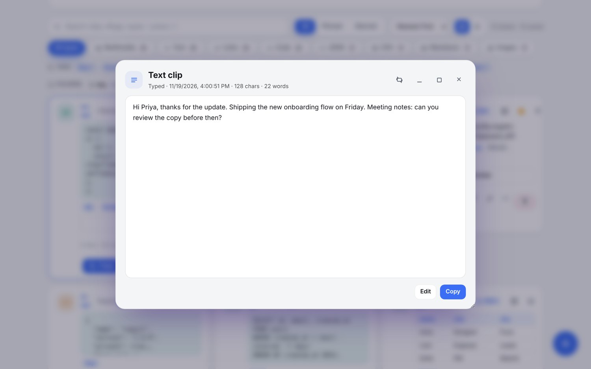

Copy it once.
Find it forever.
Copyit saves what you copy: text, links, code, images and videos. Search it, sort it, and copy it back in one click.


Everything you need, nothing extra
Twelve tools in one small extension.
Click to copy NEW
Hover any text, click once, it is copied. Paragraph, sentence or selection.
Text from images NEW
Copy words out of pictures, screenshots and paused video frames. Read on your device.
Preview & edit
Open any clip in a window. Edit text, view images, videos and links.
Pop-out player NEW
Float a saved video or audio on top while you work.
Right-click media
Copy an image or video frame. It is saved in Copyit too.
QR share
Send a link or short text to your phone. Made on your device.
Pin & star
Keep favourites on top. Filter All, Links, Code or Multimedia.
Folders & tags
Sort clips with folders and #tags. Search finds them fast.
Private & offline
No account, no tracking. Everything stays in Chrome on your computer.
Custom colour NEW
Pick any colour for the whole extension. Light, dark or auto.
Settings page NEW
A full page with simple categories and a Back to Dashboard button.
Backup & export
JSON, CSV, TXT, Markdown. Import many files at once.
One dashboard for everything you saved
Search, filter, preview and edit in a clean full-page view.
- Search clips and #tags
- Folders, pins and stars
- Preview and edit in a movable window

Make it yours in Settings
A real settings page with simple categories. Pick any colour and the whole extension follows.
- Light, dark or auto
- Colour wheel, swatches and hex
- Page tools, privacy, backup and clean-up
Three steps. That is it.
Install
Add Copyit to Chrome and pin it. Press Ctrl+Shift+Y to open it.
Save
Press Save clipboard, paste into Copyit, or right-click anything on a page.
Find & copy
Search, then click a clip to copy it back in the format you need.
See every feature in a few minutes
A short walkthrough of Copyit 1.2, from the basics to the new Settings page.
Watch on YouTubeYour clips never leave your browser
No account, no analytics, no server.
Stored locally
Everything lives in Chrome storage on your computer.
Reads only on request
The clipboard is read when you press Save. Page tools are off until you switch them on.
Open source
Check the code on GitHub any time.
Questions people ask first
Is Copyit on the Chrome Web Store?
Not yet. For now you install it with Developer mode (3 short steps above). Once it is in the store, installing will be one click.
Does Copyit watch everything I copy?
No. It reads the clipboard only when you press Save clipboard or save something yourself. It does not run in the background.
Where are my clips stored?
In Chrome storage on your computer. Nothing is sent anywhere. QR codes are made on your device too.
How do the QR codes work?
Press the QR button on a short clip. For a link, your phone opens the page. For text, the code holds the text itself (up to 5 KB, longer text is split into numbered codes).
Can I move my clips to another computer?
Yes. Export a JSON backup in Settings, install Copyit on the other computer, then import the file. Images and videos come along.
How do I remove Copyit?
Open chrome://extensions and press Remove. This also deletes your saved clips, so export a backup first.
More answers in the Docs & Guide.
Copyit is free. Help keep it going.
If Copyit saves you time, you can chip in. Thank you!
Stop re-copying. Start Copyit.
Free, private and ready in a minute.